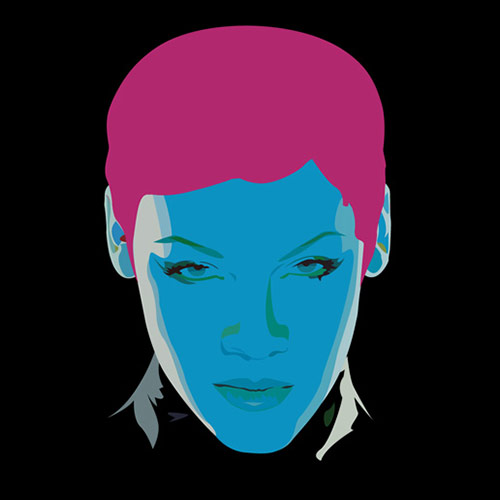
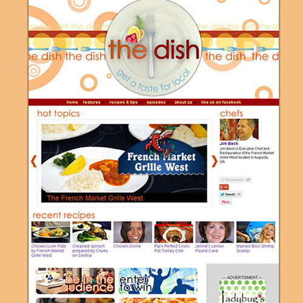
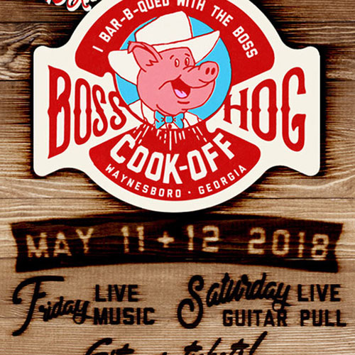
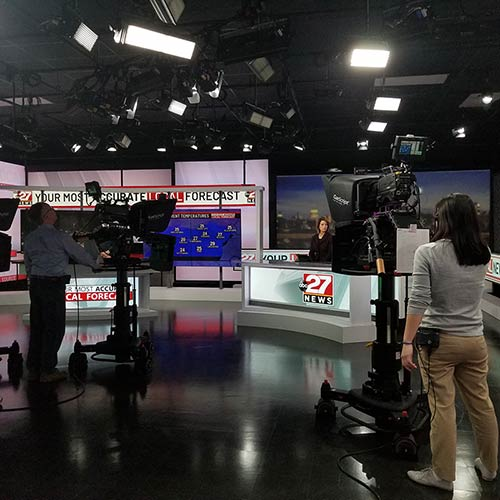

Graphic Design
Experience with logo creation, digital and print advertisements, television graphics, and other miscellaneous graphic projects with the use of Adobe Photoshop and Illustrator.
Web Design
Administrator and creator of local lifestyle show and award winning broadcast news websites through a combination of HTML and CSS on multiple CMS platforms.
Digital Advertising
Responsibilities include generating campaign reports, working with account executives to create campaign creative, communicating directly with AdOps to ensure creative is submitted and campaigns launch on time, etc.
Boradcast News
From gathering information to write news stories to directing newscasts to catching satellite feeds, I’ve worn many hats in the broadcast news industry.
